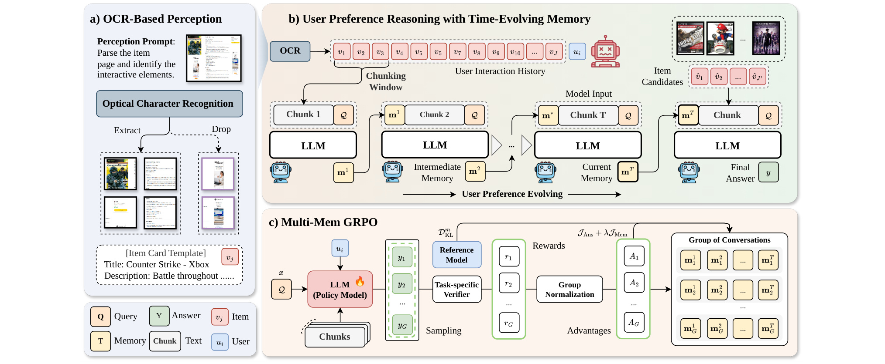
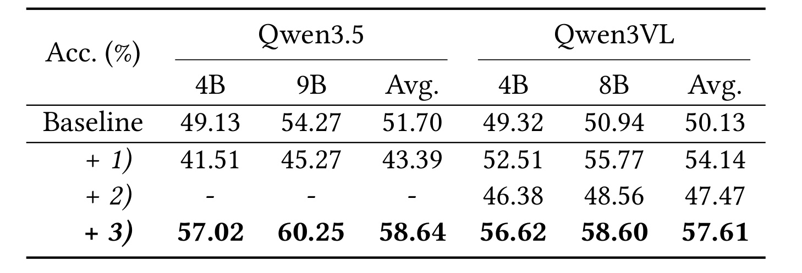
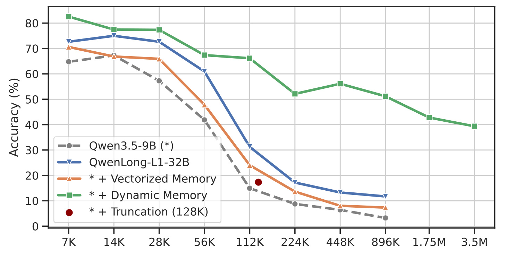
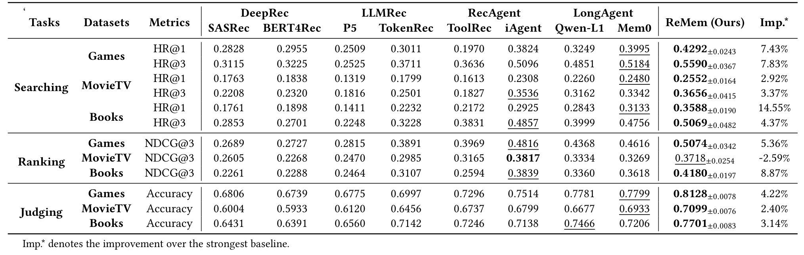
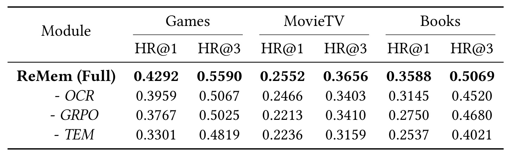
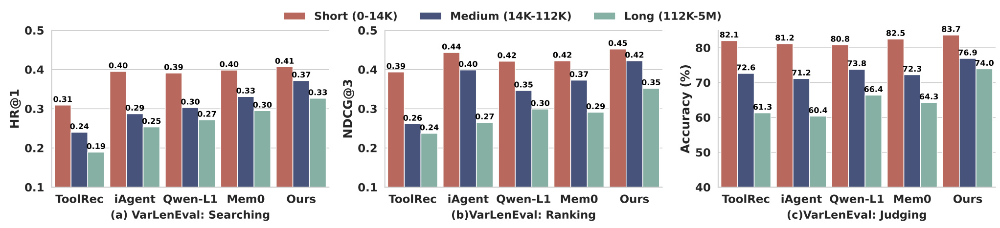
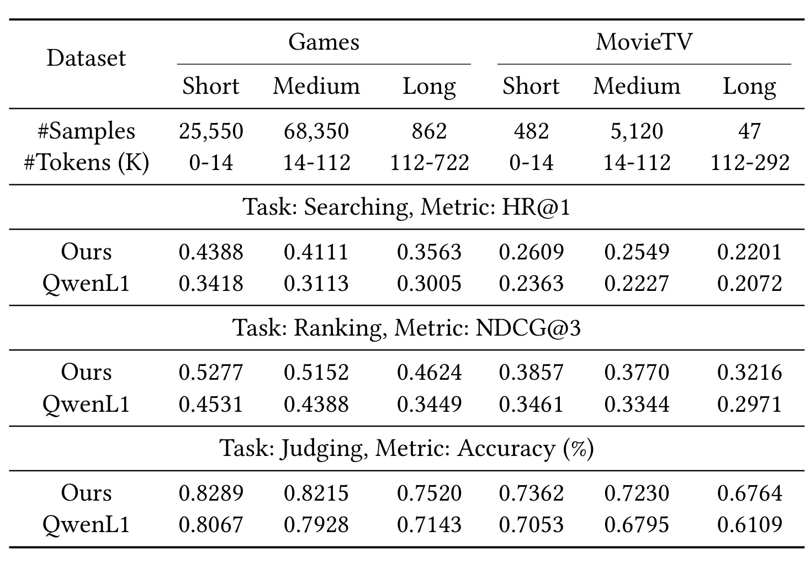
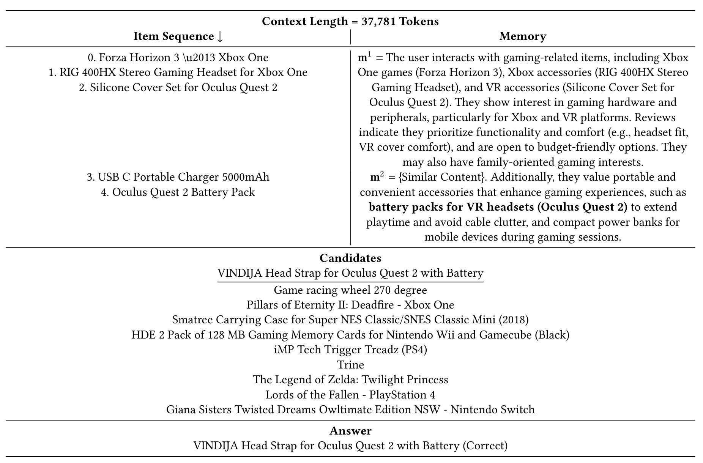
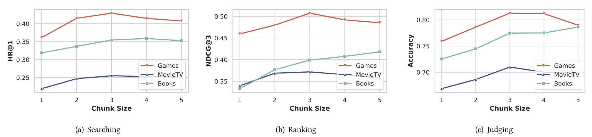
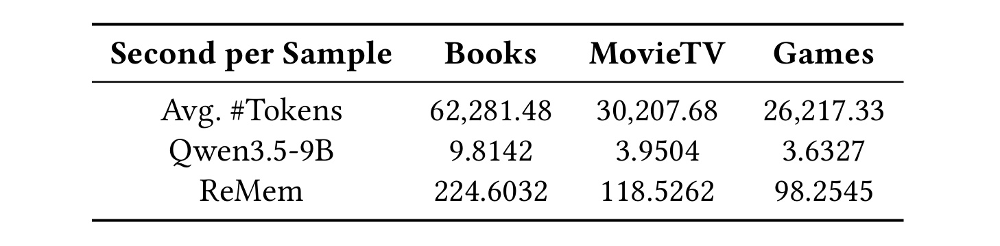

ReMem：重新理解长上下文推荐代理的感知与记忆
ReMem 讨论的是用户主动提出购物目标、代理观察商品并代为判断的推荐流程。它把网页截图识别、逐段偏好记忆和强化学习连接起来，试图让普通上下文窗口的大模型处理越来越长的商品历史。论文英文标题为 ReMem: Rethinking Perception and Memory in Long-Context Recommendation Agents，作者为 Haohao Qu、Yongcheng Jing、Chun Hin Chan、Shanru Lin、Wenqi Fan、Dacheng Tao。一作主机构为香港理工大学，同时署名南洋理工大学，并在该校访学期间完成工作；v1 于 2026 年 9 月 29 日公开，属于仍在推进的预印本研究。本笔记核验日期为 2026 年 10 月 1 日，原始入口为 arXiv:2609.37311。作者 ReMem 代码仓库可访问，但本轮没有运行训练或复现指标。
现有推荐代理仍面临两项关键局限：在噪声大、结构异质的商品页面上感知脆弱，以及面对长期用户历史和多步交互轨迹时长上下文推理低效。
1. 背景和问题
传统平台推荐通常根据用户历史在大量商品中快速召回和排序，用户并不需要明确表达每次请求。论文讨论的主动推荐则由用户先提出目标，例如为已有的虚拟现实设备选配便携电源，再由代理收集商品信息、判断兼容性并输出候选。两种工作负载对计算成本的容忍度明显不同。平台排序往往必须在高并发下迅速返回结果，购物助手可以用更长时间解释取舍，但仍然受交互等待时间限制。理解这一点，才能正确定位 ReMem：它希望改善个人推荐助手的复杂决策能力，论文给出的实验并不能证明它可以直接替换大规模线上排序模型。
第一项困难来自输入界面。商品网页包含名称、价格、参数、图片、促销区域以及广告，原始 HTML 还混有脚本和布局标签。如果把这些内容直接拼成提示词，语言模型要同时承担清除噪声、恢复页面结构和推断偏好的职责。不同商家采用不同模板，即使商品信息相同，模型读到的序列也可能差异很大。图片内容有时只留下链接，模型还需要额外访问才能理解。作者因而借用了页面设计面向人类视觉的事实：重要产品参数通常更醒目，而广告往往位于边缘。把页面截图交给 OCR，再组织成自然语言商品卡片，可以在推理前先做一次结构化感知。
这种视觉入口有明确的条件。OCR 需要真的读出正确的型号、规格、颜色与图中文字，并把这些内容与对应商品关联起来。视觉显著性与推荐相关性也不总是一致，促销广告同样可能被刻意放大。本文通过网页问答先导实验验证识别路径的可用性，再在合成商品页面中评估推荐效果。它没有系统证明各种真实购物网站上的广告都能被准确剔除，也没有覆盖登录墙、动态展开、库存变化及购买动作。这里应把“通过截图统一入口”看成减少模板依赖的一种设计，而不是已经成立的跨平台稳健性保证。
第二项困难在于历史增长。一个购物偏好可能由多个交互共同揭示：早期是某游戏平台的游戏，后来出现设备保护套，再后来是移动电源。把所有观察、推理和动作一直追加到提示词中，会迅速耗尽上下文窗口。即使窗口足够大，模型也可能忽视中间的关键线索；全注意力还会随长度增加计算和显存开销。扩大模型的训练上下文只能推迟边界，不能自动使每段历史都产生同等有效的偏好信息。外部向量检索则依赖查询与片段之间的相似度，分散在不同商品上的兴趣变化未必能被单次检索完整带回。
ReMem 采用的是显式文本记忆。它不保留每一次交互的全部字词，而是在读取新的历史块后重新生成一份受长度限制的偏好摘要。摘要可能包括长期兴趣、最近变化、预算敏感度、品牌倾向和任务约束。后续块读入时，这份摘要与新证据一起进入同一个模型；完成全部历史后，最终答案只依赖当前请求、候选商品和最后的记忆。由此，历史可以持续增长，活跃上下文却受到预算控制。文本记忆还有一个优点：研究者可以观察到模型到底记下了哪些偏好，而不是仅能检查隐藏向量。
不过，摘要是有损状态。用户曾明确排斥某个品牌，如果该约束在更新时被删掉，后面的块未必还能恢复它；如果模型把偶然购买误判为长期兴趣，错误也可能沿着记忆反复传播。论文把固定长度记忆与线性复杂度联系起来，但“固定长度”描述的是当前窗口上限，不是全部处理成本恒定，更不意味着所有偏好都能被无损保存。尤其当长期稳定兴趣与最近短期目标发生冲突时，摘要需要决定保留哪一类信息，这个决定本身就是推荐策略的一部分。
第三个问题因此转向训练：怎样教模型生成有利于最后推荐的记忆？仅要求它“摘要历史”容易得到语言流畅但决策价值有限的内容。ReMem 使用终局推荐结果奖励整个记忆链，对参与成功答案的中间记忆也进行策略优化。这样能够把记忆生成与命中率、排序质量或判断正确率连接起来，但每一段记忆获得的是同一条轨迹的终局优势，并没有独立的正确性标签。某些中间步骤可能无关甚至有害，只是后来被其他信息纠正；共享终局奖励仍可能鼓励它们。全文的方法与实验都围绕感知、记忆压缩和这种信用分配展开。
推荐研究者值得关注这里的用户侧建模接口。它把商品内容理解与时间顺序兴趣变化放在同一条语言流程中，便于处理兼容性、预算和任务描述等难以仅靠商品 ID 表达的约束。大模型研究者则可以观察固定记忆如何承接长输入，以及终局监督能否改善中间状态。评价这两类价值时，都需要保留本文的数据边界：商品页面由数据集内容合成，主要推荐任务只在十个候选中选择或排序，而不是从整个商品目录检索。更长输入和更详细解释带来的收益，还必须与真实延迟和噪声条件一起衡量。
还有一个容易被忽略的区别是“查询相关记忆”与“通用用户画像”。本文每次更新都条件化于当前请求，因而一份为设备电源选购保留的摘要，不一定能直接用于后续书籍推荐。当用户改变目标，代理可能需要重新处理历史或维护多种任务状态。论文主要评估一次给定请求的决策，没有证明跨请求的持续记忆复用能同时保持质量与低成本。这使它更像任务条件下的偏好证据缓存，而非已经完整建成的个人长期记忆系统。
2. 方法
2.1 商品页面的 OCR 多模态感知
ReMem 按原文顺序先取得商品页面，再构建可供偏好推理使用的商品表示。页面请求返回包含文字、图片和图表的视觉内容，DeepSeek-OCR-2 的编码器把页面转换成视觉 token，解码器根据视觉输入和感知提示生成结构化输出。商品卡片随后用自然语言描述名称和属性。原文公式 2 表示这一入口：
符号解释：$v_j$ 是第 $j$ 个商品的感知结果；$\operatorname{Request}$ 获取商品页面；$\operatorname{OCR}$ 解析视觉页面及其内容。这里的输出是后续语言模型可读的商品描述，不是为全目录近邻检索训练的固定长度商品向量。OCR 工具与推荐骨干在职责上分开，前者负责页面内容，后者负责用户偏好和推荐决策；论文并未给出联合更新 OCR 参数的训练实验。

Figure 3 的左侧是商品页面感知，图中实线连接保留的商品信息，虚线连接被丢弃的干扰内容，最终转成带标题、描述等字段的商品卡片。上方右侧把历史中的商品卡片按顺序切块；第一个块与请求输入语言模型，模型生成第一份记忆，第二个块再接上这份记忆继续更新，直到得到最后状态。候选商品位于最右端，它们和最终记忆一起参与答案生成。黄色方块代表记忆，粉色块代表商品，蓝色块代表用户，这些图例有助于区分用户交互证据、模型写出的状态与正在比较的候选。读图时不要把候选集合误当作全部历史，也不要把中间记忆当作新增的真实用户行为。
下方训练图把同一请求采样成多条完整的记忆—答案轨迹。任务验证器先根据最终答案给奖励，再在轨迹组内归一化形成优势；这个优势送回参与该答案的各轮记忆，同时参考模型提供策略偏离约束。图中的火焰标在策略模型上，表示优化的是推荐骨干的生成策略。上方推理流程并不需要每次都运行这套训练回路，部署时只按已经学会的策略逐块更新并回答。三个面板形成一个完整依赖链：感知决定可用的商品证据，记忆决定哪些证据进入最终窗口，强化学习决定摘要和答案生成的偏好。只改写网页而不管理历史，或只压缩历史而不改善商品识别，都可能在链条的其他位置留下瓶颈。
这张框架图支持的是流程解释，不能单独证明“看得像人”就等于可靠感知，也不能证明每段记忆都得到准确的因果信用。左侧丢弃广告的示意尚需 OCR 失败率实验支撑；下方共用终局优势可能强化与答案偶然同现的记忆内容。工程上有用的是它明确了三个可观测中间产物：商品卡片、每轮记忆和最终候选答案。复现时可以分别保存它们，检查错误最早出现于型号识别、兴趣摘要还是最后排序，再决定改善感知、改变预算或增加训练信号。
2.2 用户偏好的时间演化记忆
作者把用户历史划分成连续块，当前块只与上一轮记忆及当前请求共同输入模型。记忆使用普通自然语言 token 表示，因此不需要改动注意力算子、位置编码或内部键值缓存。原文公式 3 和 4 分别描述状态更新与最终回答：
符号解释：$m_t$ 是第 $t$ 轮更新后的记忆，$c_t$ 是这一轮历史块，$Q$ 是用户查询或任务，$p_\theta$ 是推荐骨干，$L$ 为记忆预算。论文形式化记号写固定长度，实际生成需要解释为受预算约束的文本状态，而不是必须填满相同数量的 token。每次更新覆盖上一份记忆，旧块并不会自动保留在最终活跃上下文中。
符号解释：$y$ 是最终推荐答案，$T$ 是历史块数，$m_T$ 是最后的记忆，$\hat c$ 是候选商品经 OCR 得到的内容。最终推理因此把压缩历史与候选比较分开。若候选需要一个已经在摘要中丢失的约束，答案阶段没有直接重新读取全部历史的保证；这也是固定预算引入的实际损失来源。 为了解释文本状态与长序列的联系，原文公式 6 写出对潜在记忆路径求和的分解：
符号解释：$x_{1:N}$ 代表原始长序列，$m_{1:T}$ 是一条中间记忆路径，$c_t$ 是序列块。第一个条件项对应读取证据，第二个对应形成记忆。这是作者为循环状态过程提供的概念分解，并不证明任意有损摘要都能保持原始序列分布，也没有要求推理时枚举所有可能的记忆；实际流程只生成具体记忆轨迹。 每份文本记忆仍按普通自回归方式生成，原文公式 7 为：
符号解释：$m_{t,l}$ 是当前记忆中的第 $l$ 个 token，$m_{t,<l}$ 是它之前已生成的部分。上一轮状态负责传递历史信息，而当前记忆仍由逐 token 解码产生。兼容标准生成接口有利于实现和调试，但记忆越长，需要生成的 token 越多，更新次数越多，串行依赖也越明显。 原文公式 8 给出全注意力下的计算量：
符号解释：$C$ 是每个历史块的 token 上界，$L$ 是记忆长度，$T$ 是块数，$N$ 是总历史长度。线性结论以块大小和记忆预算固定为条件；它描述成本对总历史长度的增长关系，不能理解为总耗时恒定。本文推荐配置的块上界可达十万 token、记忆五千 token，即使渐近复杂度受控，单步计算与多轮生成仍然昂贵，附录的延迟表会把这一点具体化。 在输入单位上还要区分交互窗口 $W$ 与 token 上界 $C$。默认每块三个商品交互，不等于每块三个 token 或三千 token。商品描述长度差异大，一个长页面可能支配整个块的成本。模型历史最多保留五十次交互，作者称通常需三到五轮对话，这个经验轮数与最大历史长度并不能直接互相换算。原文的块索引和固定长度表达偏概念化，复现应明确最后不足一个窗口的处理、超长单商品截断以及实际输出上限，否则表面相同的记忆预算也可能对应不同实验。
2.3 Multi-Memory GRPO 的终局信用传播
训练时，旧策略对同一请求采样 $G$ 条轨迹，每条包含多份中间记忆和最后答案。任务奖励只检查最后推荐结果，再用组内均值和标准差计算优势，原文公式 11 为：
符号解释：$r_g$ 是第 $g$ 条轨迹的最终奖励，$A_g$ 是相对组内其他轨迹的优势，$\epsilon$ 避免除零。奖励由格式分与正确性分组成，附录规定完整格式最多可得 1.5 分，正确性指标位于零到一之间，因此需要检查训练是否过多优化格式。正确性按任务采用命中率、排序指标或判断结果，不能把一种任务的分数直接当作另一种任务的质量尺度。 中间记忆和最终答案都以新旧策略的 token 概率比进行剪切优化。为避免原文公式 12 中分母下标疑点以及与公式 3 的历史条件不一致，下面用完整实际输入 $h_{g,t}$ 表示每轮条件，而不替作者消除实现层面的不确定性：
符号解释：$\rho^m$ 是记忆 token 的策略比值，$\pi_\theta$ 是更新中的策略，$\pi_{\theta_{\mathrm{old}}}$ 是采样轨迹的旧策略，$h_{g,t}$ 是该轮真实上下文。公式 3 明确使用前一轮记忆，但原文公式 12 的显式条件省略它，分母还出现不同的前缀记号；这两处需要结合代码确认。独立组织每轮会话并不意味着记忆之间语义独立，上一轮状态仍通过输入传递偏好证据。 为了同时说明原文公式 14 与 15，先定义对任一概率比的剪切项，然后区分答案和记忆的归一化：
符号解释：$\delta$ 是剪切阈值，本文取 0.2；$A$ 是该条完整轨迹的优势。剪切限制单次概率变化，负优势下仍按这个最小值形式抑制不良输出，不能简单理解为把所有概率截断到一个固定区间。
符号解释：$\rho^y$ 是最终答案 token 的新旧策略比，$L_y$ 与 $L_m$ 分别是答案和记忆的生成长度，期望对请求和采样轨迹求取。记忆目标对轮数和 token 数求平均，最终答案目标只对答案长度求平均。同一轨迹的全部记忆共享最终优势，并没有为每段摘要额外计算一个独立回报，也没有反事实地删除某段记忆来验证贡献。 加入记忆 token 上的参考策略约束后，原文公式 17 和 18 的组合目标为：
符号解释：$\lambda$ 控制记忆优化强度，$\beta$ 控制对参考策略的偏离惩罚，$f$ 在同一记忆 token 和条件下比较参考与当前策略概率。本文 $\beta=0.04$，前两个训练 epoch 把 $\lambda$ 设为零，随后设为 0.7；这使模型先学习答案再加重中间记忆优化。训练使用组大小八、批大小六十四和温度 1.5 增加探索，推理温度降到 0.2。部署不再采样整个奖励组，训练成本与单请求推理成本应分别计量。
3. 实验结果
3.1 感知与长上下文的先导证据
作者首先在通用网页问答和长上下文问答上检验两个设计动机。这些任务不是推荐指标，作用是判断 OCR 输入及动态记忆值得进一步尝试，不能作为商品偏好提升的直接替代证据。

Table 1 按两类骨干分组，左侧是 Qwen3.5 的四十亿和九十亿规模，右侧是 Qwen3VL 的四十亿和八十亿规模，指标统一为准确率百分数。第一种附加方式把 HTML 主体转成文本，第二种直接提供页面截图，第三种先用 OCR 输出页面内容。纯文本骨干无法直接使用第二种视觉输入，所以相应单元格留空，不能把空白理解成失败率百分之百。OCR 下 Qwen3.5 平均准确率为 58.64%，基线为 51.70%，绝对增加 6.94 个百分点；Qwen3VL 平均从 50.13% 到 57.61%，增加 7.48 个百分点。直接截图在视觉骨干上平均仅为 47.47%，说明这个问答设置中，拥有视觉输入能力并不自动等于更有效地提取答案。
表中第三种策略的四个模型单项也全部高于各自基线，因此平均改善并非由一个模型的异常结果主导。不过两类骨干的平均值不能合成统一总体准确率，因为模型规模和输入能力并不相同。
HTML 文本化对不同骨干的作用也不同：Qwen3.5 的平均结果降到 43.39%，而 Qwen3VL 提升到 54.14%。这提示输入噪声、提示组织与模型能力之间存在交互，不能只把“网页信息更多”当作收益来源。实验对每种策略重复五次，数据从原有网页问答中移除失效题并人工更新过期答案，最终保留六百七十三题；平均网页文字约七百一十六 token，因此这张表主要检验感知，而非极长历史。OCR 优于其他入口的证据较明确，但表中没有广告识别率、字段级错误率或不同页面模板的分组结果。它支持在这一问答样本上改善可读证据，并不能证明所有型号、价格和交互按钮都已经被完整识别。面向购物助手的复现应额外检查漏字、错误归属以及图片信息幻觉，再观察这些错误如何传递到推荐答案。

Figure 2 的横轴从七千增长到三百五十万 token，纵轴为问答准确率。绿色动态记忆曲线整体高于普通骨干、长上下文模型和向量记忆，直到最长输入仍保持约四成正确率；但它从最短输入的八成以上一路下降，不能按图注措辞解读为严格无损。向量记忆把文档编码后取最相关的五个块，每块五千 token，在更长语料中仍可能遗漏真正需要的证据。长上下文模型在超过适应长度后也明显下滑。红点只表示随机截断到固定窗口的一个对照，并不是一条完整长度曲线。各条线使用不同模型或不同处理流程，这张图证明的是组合配置的表现差异，而不是控制所有算力与模型参数后只有记忆结构不同。
动态记忆曲线在二十二万到四十四万 token 附近有局部回升，并不呈现严格单调规律；该图没有误差条，不能根据小幅起伏确定某个长度阈值带来额外机制收益。
先导数据采用合成的 RULER-HotpotQA 长上下文变体，文档数从五十增长到六千四百，考查定位和抽取。动态记忆预算是一千零二十四 token、块大小五千 token，和后续推荐实验的五千 token 记忆、三个商品一块的配置不同。它说明在一个查询目标明确的问答任务中，逐块抽取相关证据能缓和长度增长的损害；真实用户偏好却经常隐含、相互冲突或随时间改变。把这条绿色曲线直接迁移为“几百万 token 的兴趣无损建模”会越过实验范围。工程上可以借鉴它的受控状态与逐块读入接口，但需要用目标品牌排斥、价格上限、近期意图冲突等推荐条件重新验证信息保留率，而不是只测问答答案是否还在摘要里。
3.2 数据、候选与评价协议
三个推荐域来自 Amazon Reviews 2023，分别为 Games、Books、MovieTV。作者先进行五核过滤，删除少于五次交互的用户或商品，再只保留评分至少四星的正交互，并删除重复交互。使用逐用户留一评测，把最后一次交互作为目标。Games 有 94,762 位用户、25,612 个商品和 570,720 次交互；Books 有 7,377 位用户、120,925 个商品和 207,759 次交互；MovieTV 有 5,649 位用户、28,987 个商品和 79,737 次交互。平均上下文分别约 26,217、62,281 和 30,208 token；Books 最大样本接近六百万 token，这个原始数据统计与某些分组图中的五百万上界记号应分别理解，不宜强行视为同一精确截断。
商品截图由商品标题、描述、评论和图片链接组织成购物平台页面，并随机加入广告。用户 persona 与交互指令依据对应评论和任务生成。这种构造方便统一工具输入，却也使测试请求可能携带由目标评论生成的偏好线索。需要检查训练和评测时能否通过目标相关文字提前识别答案；现有材料不能证明已经发生泄漏，也不能排除这种设计风险。尤其随机负样本通常比语义相近、兼容性相同的商品更容易区分，提升幅度未必能保持到困难候选或实际目录。
每个样本由一个真实目标加九个随机负商品组成候选集合。Searching 测在这十个候选中找到目标的 HR@1、HR@3，Ranking 测十个候选的 NDCG@3，Judging 测是否偏好某商品，并用 GPT-5-mini 对答案一致性作判断。表名中的 Searching 因此不等于全商品库检索。基线包含 SASRec、BERT4Rec、P5、TokenRec、ToolRec、iAgent、QwenLong-L1 和 Mem0；其中传统模型只使用商品 ID，无法读取相同的文本与图片证据，部分判断任务还通过固定阈值适配。这些输入和适配差异会影响跨范式比较。
推荐骨干使用 Qwen3.5-9B，实验开发配置为四张九十六 GB H20。主表对 ReMem 进行五次独立推理，报告均值和标准差；这不等价于五个独立训练种子，也不自动排除数据构造偏差。训练采用较高温度采样轨迹，推理使用低温度，历史交互上限五十，记忆预算五千 token、窗口三个交互、单块最多十万 token。所有数值在这个协议内比较，不能和全目录排序的命中率直接拼接，也不能把离线判断正确率当作线上购买率。
3.3 主结果：多数指标改善与明确的负项

Table 3 把八个基线分成传统深度推荐、语言推荐、推荐代理和长上下文代理四组，左侧行块按 Searching、Ranking、Judging 展开，右侧最后一列是相对该行最强基线的提升。ReMem 在全部搜索和判断行获得最优结果，在三项排序中获得两项最优，因此主文的“多数设置最好”比“全部任务一致领先”更准确。Games 的 HR@1 从最强 Mem0 的 0.3995 到 0.4292，相对约 7.43%，绝对只增加 0.0297，即 2.97 个百分点；Books 的 HR@1 从 0.3133 到 0.3588，相对约 14.55%，是表中最大的单项增幅。Books 的 HR@3 最强基线换成 iAgent，说明最后一列并非始终比较同一模型。
负结果出现在 MovieTV 排序：iAgent 的 NDCG@3 为 0.3817，ReMem 为 0.3718，表中明确记录相对下降 2.59%。用户偏好摘要即使帮助搜索命中，也未必能保留排序所需的细粒度相对关系；MovieTV 的题目结构、候选相似度或记忆偏差都可能产生这种差异，但论文没有给出足够分析来确定原因。作者报告跨十二个任务—域—指标组合平均相对提升 5.16%，其中包括这项负增益。这个均值不能解释为任何单项提升 5.16 个百分点，更不能转换为线上点击或转化率收益。
判断任务上 Games 的准确率为 0.8128，相比 Mem0 的 0.7799 增加约 3.29 个百分点；MovieTV 为 0.7099，Books 为 0.7701。结果提供了模型在合成指令和十候选条件下选择偏好答案的证据，但 LLM 裁判引入额外的不确定性。原文称提升统计显著且给出推理标准差，表中各行的方差大小并不相同，Books HR@3 的标准差达到 0.0482。复现需要同时报告同一用户请求下的配对差异、训练种子和裁判一致性，才能区分策略不稳定、样本难度与偶然生成差异。对实际决策，最值得保留的是具体正负项和协议，而不是把一列平均数概括成全场景优势。
3.4 消融：记忆、训练与感知各自贡献

Table 4 保持三个域的 HR@1、HR@3 列，分别删除 OCR、Multi-Memory GRPO 和时间演化记忆。Books 的完整 HR@1 为 0.3588，删除 OCR 后降到 0.3145，删除 GRPO 后为 0.2750，改为直接长上下文而不用 TEM 后为 0.2537。相对完整方法，三个差值分别为 0.0443、0.0838 和 0.1051。Games 也呈现 TEM 删除损失最大，HR@1 从 0.4292 降到 0.3301；但 MovieTV 上删除 GRPO 的 HR@1 为 0.2213，略低于删除 TEM 的 0.2236，不能说 TEM 对全部指标必然最关键。这些行说明三种组件在完整设置中都有贡献，并展示了贡献随域和指标变化。
“不经 GRPO 训练也有竞争力”需要限定指标。无 GRPO 的 Games HR@1 为 0.3767，低于主表 iAgent 的 0.3824 和 Mem0 的 0.3995；Books 的 0.2750 也低于多项代理基线。它没有在所有域战胜已有方法，因此训练收益并非可以忽略。删除 OCR 使用原始商品内容，会同时改变输入噪声和内容组织；删除 TEM 会改变窗口管理和输入长度，未必只改变一个抽象模块。消融支持完整管线的价值，但要识别独立机理，还应控制总 token、信息可见范围以及实际预算。
表中也没有同时删除两个组件的组合行，因此不能从三个单独差值相加推算它们的总贡献；感知改变输入后，记忆和训练的收益可能发生交互，需要增加联合消融才能量化。
此外，这张表没有分开比较标准 GRPO、只优化最后答案、共享终局优势和独立记忆奖励。因而，完整方法比无 GRPO 更好，不能直接推导为本文的多记忆信用传播优于所有其他强化学习设计。作者在附录未来工作中计划加入更多记忆代理和一致协议下的基线，这也表明比较仍未闭合。落地研究可以先固定 OCR 商品卡片，复现完整与三个删除项，再引入仅答案训练的对照；把每轮摘要的信息保留情况与最终命中差异关联，才能判断训练究竟改善了摘要内容还是只是最终答案的格式与选项偏好。
3.5 长度分组：缓和下降，尚非无损

Figure 4 用三个并列面板比较 Books 的搜索、排序和判断，红、蓝、绿分别对应短、中、长上下文。每组柱子先按方法比较，再用颜色比较同一方法的长度变化。Ours 的 HR@1 约为 0.41、0.37、0.33，NDCG@3 约为 0.45、0.42、0.35，判断准确率为 83.7%、76.9%、74.0%。三项都随长度增加下降，说明动态记忆没有消除长历史困难。其优势在于长组仍优于相应基线：例如长组判断 74.0%，高于 Qwen-L1 的 66.4% 和 Mem0 的 64.3%。这种比较能够支持“在长组中缓和退化”，不支持“历史增长不会损失任何偏好”。
Books 的短组有六百五十八例，中组六千零二十四例，长组六百九十四例。组别不是在完全相同请求上人为加长后重复测量，而是按自然样本长度划分，所以用户历史长度、商品复杂度和目标难度可能同时变化。长组的下降可能来自推理成本，也可能来自更复杂的偏好，这张图不能完全拆开。原文把较长组 Ours 与其他方法的中组对比，用来展示其相对抗退化能力，但跨组样本分布不同，最好把它当作现象描述。评估记忆本身的保真性，应在同一请求上逐渐追加无关和冲突历史，分别测试长期约束与最近目标是否仍被正确保留。
横轴下方是方法名称，三个面板纵轴单位并不一致：前两个是零到一的推荐指标，最后一个是准确率百分数。图中的一位或两位小数是展示舍入，不能从柱高反算主表的精确数值。它提供的是长度条件下的表现结构，而不是完整延迟曲线。若要比较相同服务预算，仍需要给每个长度组添加处理 token、记忆轮数、峰值显存和等待时间；否则准确率较高的方法可能只是使用更多串行解码。下面附录表给出另外两个域的组别数量，让外推边界更清晰。

Table 6 的前两行先列样本量和 token 区间，再对三个任务分别列 Ours 与 QwenL1。Games 长组有八百六十二例，MovieTV 长组只有四十七例；MovieTV 的中组则有五千一百二十例。少量长组样本不能与规模更大的中组视为同等精度的证据。Games 长组 HR@1 为 0.3563，对照 0.3005，相对约提高 18.6%；NDCG@3 为 0.4624，对照 0.3449，相对约提高 34.1%。这些幅度大于主表部分指标，是特定困难子集的结果，不能取代总体平均数。判断准确率为 0.7520 对 0.7143，绝对增加 3.77 个百分点。
MovieTV 长组 HR@1 为 0.2201，对照 0.2072；排序为 0.3216 对 0.2971；判断为 0.6764 对 0.6109。尽管全部高于这里选择的 QwenL1，它仍不回答为何主表 MovieTV 排序落后 iAgent，因为附录没有把 iAgent 一并放入这一长度表。短中长子集同时下降的形态再次提醒，压缩能够延伸可处理范围，却没有消除全部退化。表头 Judging 写 Accuracy (%)，数值却以零到一小数表示；读者需要按小数转为百分数，不能把 0.6764 当作百分之零点六七。这样的单位不一致也应在复现表格中明确修正。
四十七例中的单个错误就会改变未加权正确率约两个百分点，较大的比例增益仍可能对个别样本敏感；重复推理能够观察生成随机性，却不会自动增加独立用户请求的数量。
对推荐部署，少样本长尾恰恰可能对应最高成本请求。平均指标之外，应保存长组每例的正确性与资源消耗，核查四十七例是否集中于少数用户类型，并报告置信区间。本文尚未做到这些细分，因此其最稳妥的结论是：在所列数据域和长度分组中，ReMem 相比指定长上下文对照保持优势，证据不足以宣称任意新域、任意长历史都同样有效。把这张表与 Books 图联合阅读，可以发现动态记忆既具有扩展输入范围的潜力，也需要专门的长尾评价来判断可靠性。
3.6 可读记忆案例：从游戏平台到设备电池

Table 5 上半部左列列出五次交互，右列展示两轮自然语言记忆。前三项包括 Xbox 游戏、Xbox 耳机和 Oculus Quest 2 保护套，第一份摘要把用户归纳为对游戏平台、设备硬件和外设感兴趣，同时推断关注功能性与舒适度。后两项出现便携充电器和 Quest 2 电池包，第二份摘要保留已有信息，又加入便携电源、延长游玩时间和减少线缆负担。表下半部给出十个候选，答案选择带电池的 Quest 2 头带，和目标一致。上下两份摘要让研究者直接看到，模型并不是仅凭近期商品名称输出答案，而是把新电源线索接到早先的虚拟现实设备兴趣上。
这个案例解释了时间演化记忆的可能收益：若摘要始终停留在“喜欢 Xbox 游戏”，最后候选中的游戏作品可能更容易被选中；加入近期的供电需求后，设备配件成为更合适的方向。可读文本也便于观察过度推断，例如第一份记忆提到家庭游戏兴趣，但简化后的商品标题本身不充分支持这个描述，可能来自原评论，也可能是模型猜测。表中只展示商品标题而省略详细页面和评论，读者无法完全核实每条偏好依据。第二份记忆还用“相似内容”省略了部分先前状态，不能据此判断所有旧约束都完整保存。
表的总上下文为 37,781 token，属于一个具体成功样本，不是失败率统计。它既没有展示 OCR 出错后记忆如何恢复，也没有展示长期与近期偏好冲突时的选择规则，因此不能说明系统总能正确跟踪兴趣漂移。对复现最有用的做法是沿用同样的可读状态记录，给每条偏好加上来源商品和更新时间，再检查错误推荐是否由无依据推断、重要约束丢失或近期证据权重不足引起。这个成功例提供了观察接口，却没有替代对大量请求的定量验证；不能只选若干漂亮摘要就认定用户画像已经可信。
3.7 交互窗口大小的权衡

Figure 6 横轴是每个历史块所含交互数量，从一到五，而不是 token 长度或记忆容量。三个面板分别展示 HR@1、NDCG@3 和判断准确率，每条线对应 Games、MovieTV 或 Books。Games 与 MovieTV 大体在三个交互附近表现较好，继续增大窗口后不再稳定改善；Books 的排序和判断仍可能在四或五个交互时获益，搜索则大约在四附近较高。这与 Books 平均历史更长的事实相容，但没有证明最佳窗口只由平均历史长度决定。商品页面文字长度和用户任务复杂度同样会影响每块能放入多少有效证据。
窗口很小时，模型需要更多轮摘要，较早信息可能经过多次重新写作而逐渐丢失，串行解码开销也增加；窗口较大则一次看到更多相关商品，方便比较交互之间的关系，但当前上下文噪声和注意力负担上升。这种权衡使三个交互成为论文的统一默认值，却不应成为所有推荐数据的通用常数。图中没有为每个窗口同时报告延迟、生成 token 或峰值显存，因此只按准确率选参可能错过成本上更合理的配置。例如两个交互的窗口在某些指标稍差，却可能在约束严格的任务中保留更明确的近期变化，仍需实测判断。
作者把该分析与记忆轮数的适中范围联系起来，附录未来工作又计划按一千、两千、一万、两万 token 做更直接的块大小比较，说明当前交互窗口与 token 预算之间的研究尚不完整。复现宜同时记录两个量：每块商品数量以及实际文本 token 数，然后比较固定总服务预算下的收益。尤其长商品页面可能使三个交互就接近十万 token 上限，而简短页面则远低于它。只有把这一差异纳入统计，才能判断曲线变化来自“组合更多偏好线索”还是“投入更多计算”，并确定是否需要自适应切块。
3.8 单 H20 延迟：渐近线性依然很慢

Table 7 的单位是每样本秒数，硬件为单张九十六 GB H20。Books 平均输入约 62,281 token，原始 Qwen3.5-9B 直接推理为 9.8142 秒，ReMem 为 224.6032 秒；MovieTV 从 3.9504 秒到 118.5262 秒；Games 从 3.6327 秒到 98.2545 秒。分别大约增加到直接推理的 22.9、30.0 和 27.0 倍。ReMem 的 Books 请求平均超过三分半，其他两个域也接近或超过一分半，因此不能称为已经具备实时平台排序能力。作者认为用户侧主动代理可以更重视质量，但这种容忍度是应用假设，仍需真实交互测试，而不是由离线指标自动成立。
延迟来源与方法一致：历史必须经过多轮读入和记忆生成，每份文本状态又依赖前一轮。有限窗口减少的是单步上下文增长，并没有让多轮生成消失。表中不同域耗时并不严格按平均输入 token 成比例，说明请求结构、输出长度和记忆轮数也可能影响成本。论文没有拆出 OCR、记忆预填充、摘要解码和最终回答各阶段时间，也未给出延迟分位数、批处理吞吐或不同并发下的显存利用。四张 H20 的实验开发配置与这里单张 H20 的请求延迟不可混为同一个服务系统。
这张表把“线性复杂度”与“资源高效”的边界暴露得很直接。与把越来越长的历史全部放入注意力相比，固定块可能有更好的增长趋势，但在现有常数、记忆长度和轮数下，绝对等待时间仍然高。若希望作为购物助手使用，可以考虑预先更新用户记忆、对重复商品缓存 OCR 结果，或者只在复杂请求中触发长链推理；这些是潜在改造方向，本文没有验证改造后的质量与时延。最关键的后续实验是同时测相同历史、相同候选和相同服务预算下的效用，报告每阶段耗时及长尾延迟，而不是继续仅用渐近阶数推断可部署性。
4. 总结
4.1 贡献与适用判断
ReMem 把商品感知和长历史状态维护放在同一条推荐代理流程中，贡献最清晰的地方是三个环节之间的接口：截图形成可读商品卡片，历史块持续更新可读偏好状态，终局推荐奖励进一步训练摘要与答案。它提供了一种无需修改骨干注意力算子的长输入处理方式，也让兴趣变化可以通过中间文本观察。主结果多数指标改善、三个组件删除均有损失，说明完整组合在论文协议下有价值；MovieTV 排序负项和高延迟同时表明，质量收益不应被概括成所有场景成立。
对推荐算法，较有迁移意义的是在内容丰富、约束复杂的候选决策中显式维护任务相关偏好。这样的状态可以帮助解释用户为什么偏好设备配件，也能为后续更快模型提供经过检查的用户侧信息。对大模型，本文提供了文本循环状态和终局信用传播的联合实验，但还没有回答记忆是否忠实、奖励是否精确归因以及跨平台噪声如何传播。把模型生成的偏好当作用户事实之前，仍需要来源和不确定性标记。
4.2 局限与风险
第一，商品页面是合成快照，真实网站的动态内容、广告操纵和页面故障并未充分覆盖。OCR 可以降低模板依赖，却可能把错误规格写入记忆并持续影响决策，附录也把不同 OCR 模型和失败分析列为待做项。第二，十候选与随机负样本让任务难度受采样控制，尚无全目录检索、困难负样本或线上反馈证据。第三，persona 和查询依据对应评论生成，需要专门检查目标线索暴露和数据切分；目前只能识别风险，不能断言发生了泄漏。
第四，最终优势共享给全部记忆，没有逐状态的忠实性或反事实贡献验证，摘要可能同时包含有用证据与无依据猜测。公式条件和下标还存在需要代码确认的细节。第五，五次独立推理未覆盖全部训练随机性，MovieTV 长组仅四十七例，LLM 裁判也可能产生误判，稳定性证据有限。第六，平均一百到两百多秒的单请求开销需要单独评估用户容忍度，不能以线性增长替代实际成本；文本记忆还会涉及用户隐私、访问控制和删除需求，本文未系统评估这些治理环节。
4.3 优先复现与后续跟进
首先应固定论文数据与十候选协议，复现主表及三个删除项，并把原始页面、OCR 商品卡片、每轮记忆和最终答案关联保存。这样可以判断指标差异来自内容识别、摘要遗忘还是末端选择。随后加入只训练最终答案与标准 GRPO 的对照，检验共享终局优势是否真的改善中间记忆，而不仅提升格式或选项输出。
第二步是在同一用户请求上加入相近商品、冲突历史和明确排斥约束，用可验证证据检查摘要保真；同时切断由目标评论生成的提示线索，观察效果是否保持。第三步测量每阶段时延、长尾等待、输出 token 和实际并发，评估缓存 OCR、预先更新记忆或缩小记忆预算的成本收益。这些改造需要重新检查质量，不能假定缩短等待不会伤害兴趣建模。
最后跟进作者后续版本中尚未完成的跨平台 OCR 失败率、按 token 切块、MemAgent 等记忆基线和更丰富行动空间实验。当前预印本展示了一条有研究价值的个人推荐代理路线；是否能够形成可持续服务，仍取决于更严格的任务外推、记忆可信度和绝对成本证据。